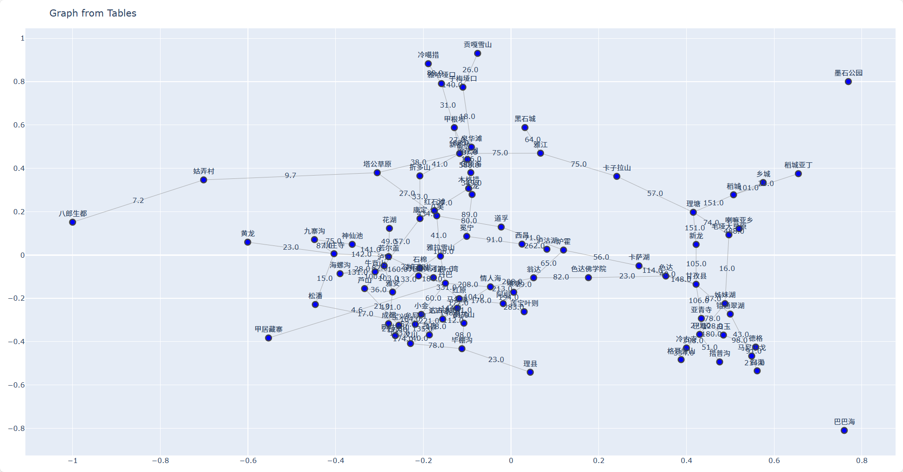
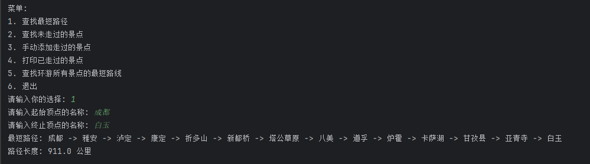
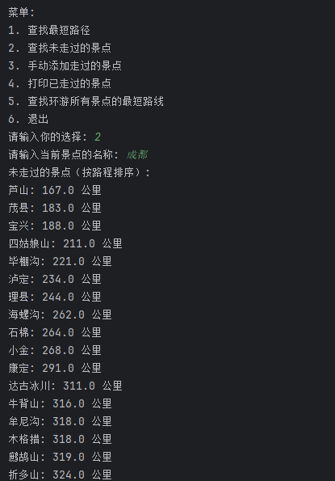

路径问题-v1
景区路径规划系统
项目简介
本项目是一个基于Python的景区路径规划系统，使用NetworkX进行图论计算和Plotly进行可视化展示。系统能够帮助游客规划景区游览路线，包括查找最短路径、记录已游览景点、推荐未游览景点以及计算环游所有景点的最短路线等功能。
项目仓库地址：GitHub仓库
克隆代码：
1 | |
项目结构
1 | |
功能特性
1. 景区地图可视化
从Excel文件读取节点和边数据
生成交互式景区地图可视化
显示景点名称和路径距离

2. 路径规划功能
最短路径查询：查找两个景点之间的最短路径
未游览景点推荐：基于当前位置推荐未游览景点（按距离排序）
环游路线规划：计算从起点出发游览所有景点的最短路线（TSP问题）
 
注：环游路线规划功能由于采用回溯算法，在景点数量较多时计算耗时较长，暂未提供示例截图。建议在实际使用中景点数量控制在10个以内。
3. 游览记录管理
- 手动添加已游览景点
- 查看已游览景点列表
- 自动排除已游览景点推荐
使用说明
运行环境
- Python 3.6+
- 必要库：
pandas,networkx,plotly,openpyxl
安装依赖： 1
pip install pandas networkx plotly openpyxl
使用方法
准备数据：
nodes.xlsx：包含景点信息（序号、顶点名称）edges.xlsx：包含路径信息（起始节点、终止节点、权重/公里）
运行程序：
1
python scenic_path_v1.py选择功能：
- 1: 查找最短路径
- 2: 查找未走过的景点
- 3: 手动添加走过的景点
- 4: 打印已走过的景点
- 5: 查找环游所有景点的最短路线
- 6: 退出
数据格式要求
nodes.xlsx
| 序号 | 顶点名称 |
|---|---|
| 1 | 景点A |
| 2 | 景点B |
| … | … |
edges.xlsx
| 起始节点 | 终止节点 | 权重(公里) |
|---|---|---|
| 1 | 2 | 1.5 |
| 2 | 3 | 2.0 |
| … | … | … |
visited.xlsx（自动生成）
| 已走过 |
|---|
| 1 |
| 3 |
| … |
算法说明
- 最短路径：使用Dijkstra算法
- 环游路线：使用回溯算法解决旅行商问题(TSP)（注：景点数量多时性能有限）
- 布局算法：使用NetworkX的spring_layout进行可视化布局
未来改进
- 增加更高效的TSP求解算法（如动态规划或近似算法）
- 添加用户界面（Web或桌面应用）
- 支持实时路径更新和多人协作记录
- 集成地图API提供更精确的路径计算
- 优化环游路线算法性能
作者信息
[XiaZhiMiao]
[xia_12_13]
[2025/4/19]
路径问题-v1
http://example.com/2025/04/19/路径问题-v1/